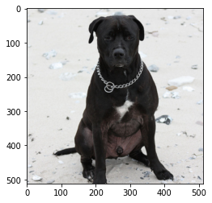
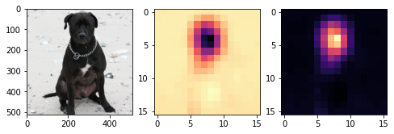
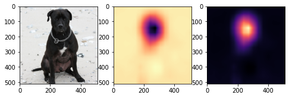
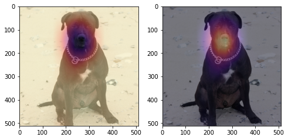
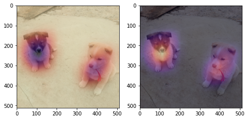
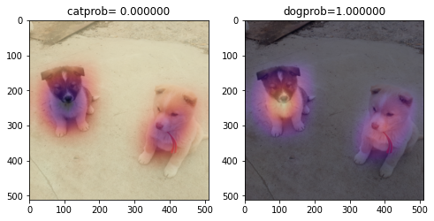
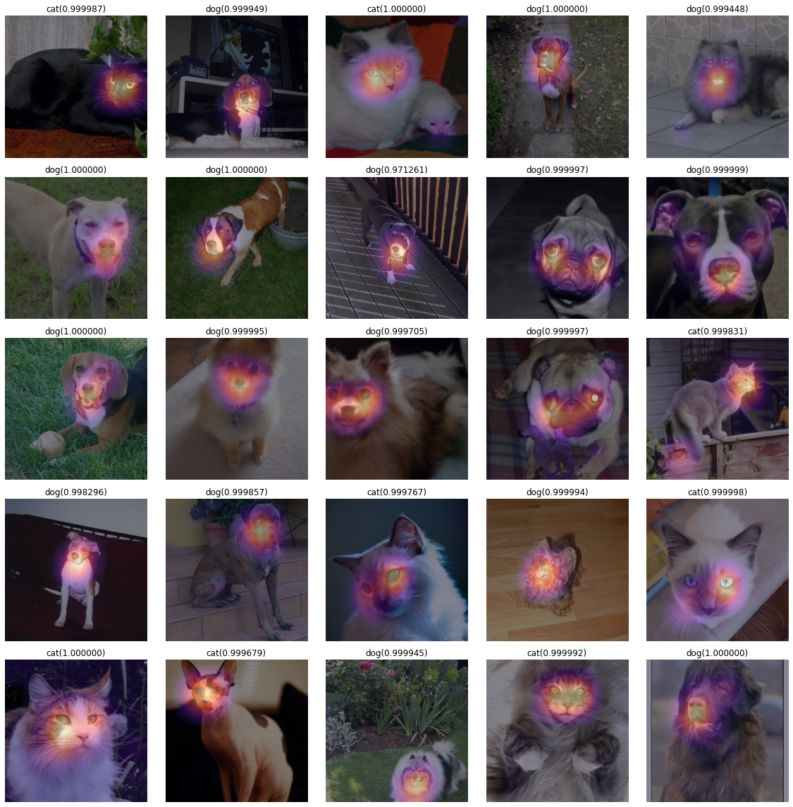
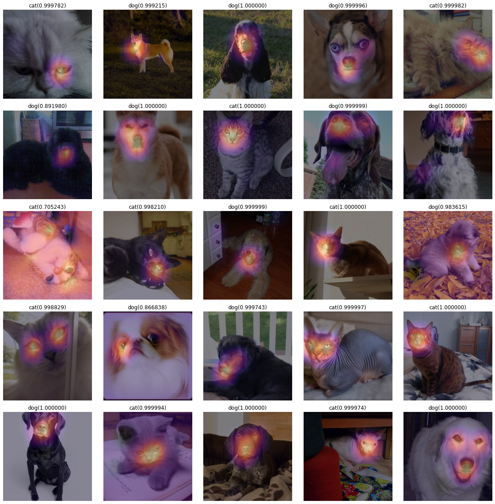
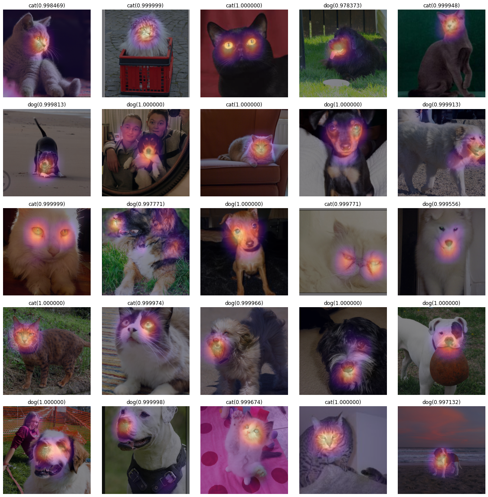
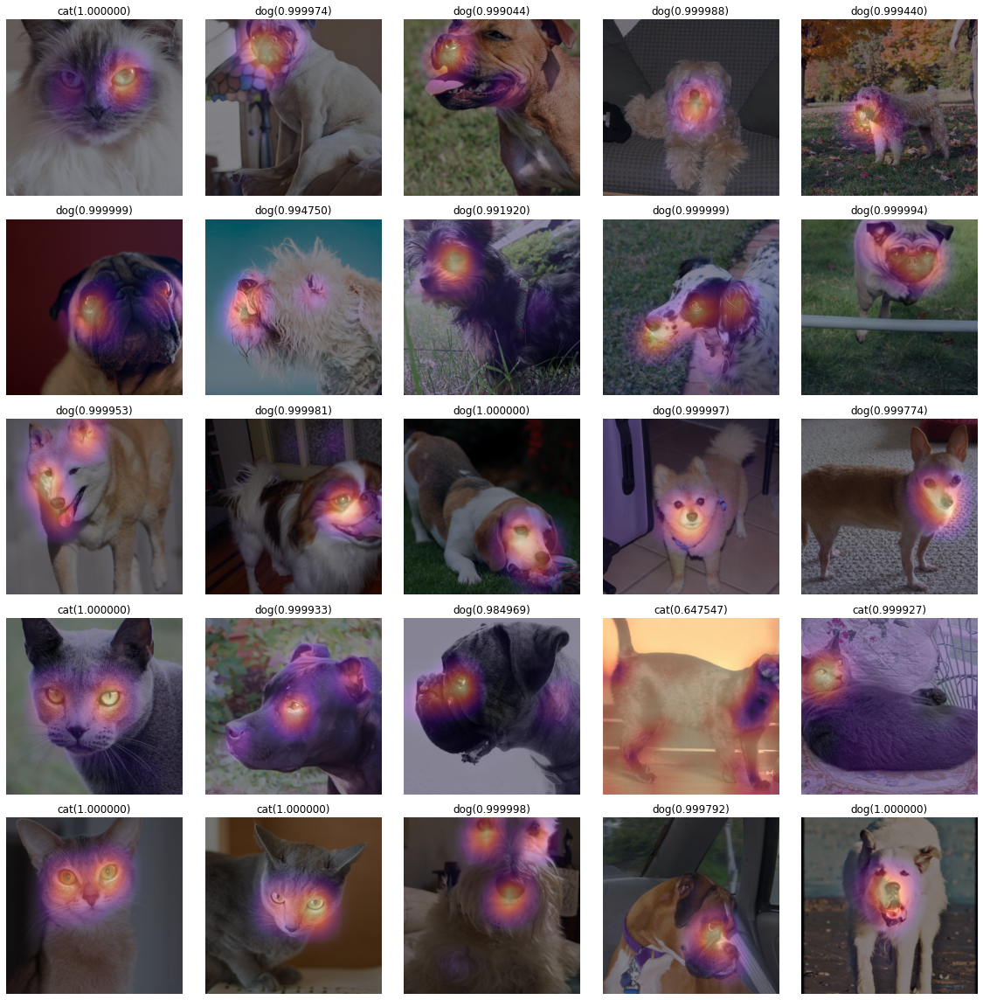

import torch
import torchvision
from fastai.vision.all import * 기계학습 특강 (8주차) 10월26일–(2) [이미지자료분석 - Transfer Learning, CAM (설명가능한 인공지능모형, XAI)]
imports
Transfer Learning
path = untar_data(URLs.CIFAR)path.ls()(#3) [Path('/home/csy/.fastai/data/cifar10/train'),Path('/home/csy/.fastai/data/cifar10/labels.txt'),Path('/home/csy/.fastai/data/cifar10/test')]!ls '/home/csy/.fastai/data/cifar10/train'airplane automobile bird cat deer dog frog horse ship truck수제네트워크
- dls
dls = ImageDataLoaders.from_folder(path,train='train',valid='test') _X,_y = dls.one_batch()
_X.shape, _y.shape(torch.Size([64, 3, 32, 32]), torch.Size([64]))!ls '/home/csy/.fastai/data/cifar10/train' # 10개의 클래스airplane automobile bird cat deer dog frog horse ship truckdls.show_batch()- lrnr 생성
net1 = torch.nn.Sequential(
torch.nn.Conv2d(3,128,(5,5)),
torch.nn.ReLU(),
torch.nn.MaxPool2d((2,2)),
torch.nn.Flatten()
)net는 cpu에 있고 X는 gpu에 있으니 cpu로 불러오자
#net1(_X.to("cpu")).shapenet = torch.nn.Sequential(
net1,
torch.nn.Linear(25088,10)
)
loss_fn = torch.nn.CrossEntropyLoss()
lrnr = Learner(dls,net,loss_fn,metrics=accuracy) net.to("cuda:0")Sequential(
(0): Sequential(
(0): Conv2d(3, 128, kernel_size=(5, 5), stride=(1, 1))
(1): ReLU()
(2): MaxPool2d(kernel_size=(2, 2), stride=(2, 2), padding=0, dilation=1, ceil_mode=False)
(3): Flatten(start_dim=1, end_dim=-1)
)
(1): Linear(in_features=25088, out_features=10, bias=True)
)- 학습
X,y=dls.one_batch()lrnr.model(X).shapetorch.Size([64, 10])lrnr.fit(10)| epoch | train_loss | valid_loss | accuracy | time |
|---|---|---|---|---|
| 0 | 1.266191 | 1.226523 | 0.572100 | 00:05 |
| 1 | 1.128916 | 1.124115 | 0.609800 | 00:05 |
| 2 | 1.025027 | 1.076060 | 0.629600 | 00:05 |
| 3 | 0.956499 | 1.071469 | 0.636600 | 00:05 |
| 4 | 0.852002 | 1.033129 | 0.650600 | 00:05 |
| 5 | 0.811420 | 1.071609 | 0.641600 | 00:05 |
| 6 | 0.735469 | 1.074108 | 0.648300 | 00:04 |
| 7 | 0.703909 | 1.094982 | 0.648800 | 00:04 |
| 8 | 0.623525 | 1.132971 | 0.645000 | 00:05 |
| 9 | 0.589313 | 1.157667 | 0.637900 | 00:05 |
- 이게 생각보다 잘 안맞아요.. 70넘기 힘듬
전이학습 (남이 만든 네트워크)
- lrnr 생성
학습되어 있는 파라메터까지 같이 가져오기
#collapse_output
net = torchvision.models.resnet18(weights=torchvision.models.resnet.ResNet18_Weights.IMAGENET1K_V1)
netResNet(
(conv1): Conv2d(3, 64, kernel_size=(7, 7), stride=(2, 2), padding=(3, 3), bias=False)
(bn1): BatchNorm2d(64, eps=1e-05, momentum=0.1, affine=True, track_running_stats=True)
(relu): ReLU(inplace=True)
(maxpool): MaxPool2d(kernel_size=3, stride=2, padding=1, dilation=1, ceil_mode=False)
(layer1): Sequential(
(0): BasicBlock(
(conv1): Conv2d(64, 64, kernel_size=(3, 3), stride=(1, 1), padding=(1, 1), bias=False)
(bn1): BatchNorm2d(64, eps=1e-05, momentum=0.1, affine=True, track_running_stats=True)
(relu): ReLU(inplace=True)
(conv2): Conv2d(64, 64, kernel_size=(3, 3), stride=(1, 1), padding=(1, 1), bias=False)
(bn2): BatchNorm2d(64, eps=1e-05, momentum=0.1, affine=True, track_running_stats=True)
)
(1): BasicBlock(
(conv1): Conv2d(64, 64, kernel_size=(3, 3), stride=(1, 1), padding=(1, 1), bias=False)
(bn1): BatchNorm2d(64, eps=1e-05, momentum=0.1, affine=True, track_running_stats=True)
(relu): ReLU(inplace=True)
(conv2): Conv2d(64, 64, kernel_size=(3, 3), stride=(1, 1), padding=(1, 1), bias=False)
(bn2): BatchNorm2d(64, eps=1e-05, momentum=0.1, affine=True, track_running_stats=True)
)
)
(layer2): Sequential(
(0): BasicBlock(
(conv1): Conv2d(64, 128, kernel_size=(3, 3), stride=(2, 2), padding=(1, 1), bias=False)
(bn1): BatchNorm2d(128, eps=1e-05, momentum=0.1, affine=True, track_running_stats=True)
(relu): ReLU(inplace=True)
(conv2): Conv2d(128, 128, kernel_size=(3, 3), stride=(1, 1), padding=(1, 1), bias=False)
(bn2): BatchNorm2d(128, eps=1e-05, momentum=0.1, affine=True, track_running_stats=True)
(downsample): Sequential(
(0): Conv2d(64, 128, kernel_size=(1, 1), stride=(2, 2), bias=False)
(1): BatchNorm2d(128, eps=1e-05, momentum=0.1, affine=True, track_running_stats=True)
)
)
(1): BasicBlock(
(conv1): Conv2d(128, 128, kernel_size=(3, 3), stride=(1, 1), padding=(1, 1), bias=False)
(bn1): BatchNorm2d(128, eps=1e-05, momentum=0.1, affine=True, track_running_stats=True)
(relu): ReLU(inplace=True)
(conv2): Conv2d(128, 128, kernel_size=(3, 3), stride=(1, 1), padding=(1, 1), bias=False)
(bn2): BatchNorm2d(128, eps=1e-05, momentum=0.1, affine=True, track_running_stats=True)
)
)
(layer3): Sequential(
(0): BasicBlock(
(conv1): Conv2d(128, 256, kernel_size=(3, 3), stride=(2, 2), padding=(1, 1), bias=False)
(bn1): BatchNorm2d(256, eps=1e-05, momentum=0.1, affine=True, track_running_stats=True)
(relu): ReLU(inplace=True)
(conv2): Conv2d(256, 256, kernel_size=(3, 3), stride=(1, 1), padding=(1, 1), bias=False)
(bn2): BatchNorm2d(256, eps=1e-05, momentum=0.1, affine=True, track_running_stats=True)
(downsample): Sequential(
(0): Conv2d(128, 256, kernel_size=(1, 1), stride=(2, 2), bias=False)
(1): BatchNorm2d(256, eps=1e-05, momentum=0.1, affine=True, track_running_stats=True)
)
)
(1): BasicBlock(
(conv1): Conv2d(256, 256, kernel_size=(3, 3), stride=(1, 1), padding=(1, 1), bias=False)
(bn1): BatchNorm2d(256, eps=1e-05, momentum=0.1, affine=True, track_running_stats=True)
(relu): ReLU(inplace=True)
(conv2): Conv2d(256, 256, kernel_size=(3, 3), stride=(1, 1), padding=(1, 1), bias=False)
(bn2): BatchNorm2d(256, eps=1e-05, momentum=0.1, affine=True, track_running_stats=True)
)
)
(layer4): Sequential(
(0): BasicBlock(
(conv1): Conv2d(256, 512, kernel_size=(3, 3), stride=(2, 2), padding=(1, 1), bias=False)
(bn1): BatchNorm2d(512, eps=1e-05, momentum=0.1, affine=True, track_running_stats=True)
(relu): ReLU(inplace=True)
(conv2): Conv2d(512, 512, kernel_size=(3, 3), stride=(1, 1), padding=(1, 1), bias=False)
(bn2): BatchNorm2d(512, eps=1e-05, momentum=0.1, affine=True, track_running_stats=True)
(downsample): Sequential(
(0): Conv2d(256, 512, kernel_size=(1, 1), stride=(2, 2), bias=False)
(1): BatchNorm2d(512, eps=1e-05, momentum=0.1, affine=True, track_running_stats=True)
)
)
(1): BasicBlock(
(conv1): Conv2d(512, 512, kernel_size=(3, 3), stride=(1, 1), padding=(1, 1), bias=False)
(bn1): BatchNorm2d(512, eps=1e-05, momentum=0.1, affine=True, track_running_stats=True)
(relu): ReLU(inplace=True)
(conv2): Conv2d(512, 512, kernel_size=(3, 3), stride=(1, 1), padding=(1, 1), bias=False)
(bn2): BatchNorm2d(512, eps=1e-05, momentum=0.1, affine=True, track_running_stats=True)
)
)
(avgpool): AdaptiveAvgPool2d(output_size=(1, 1))
(fc): Linear(in_features=512, out_features=1000, bias=True)
)- \(k=1000\) 즉 1000개의 물체를 구분하는 모형임
net.fc = torch.nn.Linear(in_features=512, out_features=10) loss_fn = torch.nn.CrossEntropyLoss()
lrnr = Learner(dls,net,loss_fn,metrics=accuracy)- 학습
lrnr.fit(10) | epoch | train_loss | valid_loss | accuracy | time |
|---|---|---|---|---|
| 0 | 0.813206 | 0.955131 | 0.677300 | 00:21 |
| 1 | 0.636926 | 0.719258 | 0.760700 | 00:21 |
| 2 | 0.538001 | 0.802607 | 0.765500 | 00:21 |
| 3 | 0.446174 | 0.591965 | 0.804200 | 00:20 |
| 4 | 0.339985 | 0.677038 | 0.786200 | 00:20 |
| 5 | 0.283703 | 0.664880 | 0.797400 | 00:21 |
| 6 | 0.221962 | 0.734830 | 0.787000 | 00:21 |
| 7 | 0.183193 | 0.720297 | 0.798000 | 00:21 |
| 8 | 0.160181 | 0.785769 | 0.790900 | 00:21 |
| 9 | 0.144745 | 0.745676 | 0.804400 | 00:21 |
- CIFAR10을 맞추기 위한 네트워크가 아님에도 불구하고 상당히 잘맞음
- 일반인이 거의 밑바닥에서 설계하는것보다 전이학습을 이용하는 것이 효율적일 경우가 많다.
전이학습 다른 구현: 순수 fastai 이용
- 예전코드 복습
path = untar_data(URLs.PETS)/'images'files= get_image_files(path)def label_func(fname):
if fname[0].isupper():
return 'cat'
else:
return 'dog'dls = ImageDataLoaders.from_name_func(path,files,label_func,item_tfms=Resize(512)) lrnr = vision_learner(dls,resnet34,metrics=accuracy) /home/csy/anaconda3/envs/py37/lib/python3.7/site-packages/torchvision/models/_utils.py:209: UserWarning: The parameter 'pretrained' is deprecated since 0.13 and may be removed in the future, please use 'weights' instead.
f"The parameter '{pretrained_param}' is deprecated since 0.13 and may be removed in the future, "
/home/csy/anaconda3/envs/py37/lib/python3.7/site-packages/torchvision/models/_utils.py:223: UserWarning: Arguments other than a weight enum or `None` for 'weights' are deprecated since 0.13 and may be removed in the future. The current behavior is equivalent to passing `weights=ResNet34_Weights.IMAGENET1K_V1`. You can also use `weights=ResNet34_Weights.DEFAULT` to get the most up-to-date weights.
warnings.warn(msg)lrnr = cnn_learner(dls,resnet34,metrics=accuracy)
lrnr.fine_tune(1)| epoch | train_loss | valid_loss | accuracy | time |
|---|---|---|---|---|
| 0 | 0.204861 | 0.011182 | 0.995940 | 00:32 |
| epoch | train_loss | valid_loss | accuracy | time |
|---|---|---|---|---|
| 0 | 0.056896 | 0.009584 | 0.996617 | 00:44 |
- 사실 위의 코드가 transfer learning 이었음.
#collapse_output
lrnr.modelSequential(
(0): Sequential(
(0): Conv2d(3, 64, kernel_size=(7, 7), stride=(2, 2), padding=(3, 3), bias=False)
(1): BatchNorm2d(64, eps=1e-05, momentum=0.1, affine=True, track_running_stats=True)
(2): ReLU(inplace=True)
(3): MaxPool2d(kernel_size=3, stride=2, padding=1, dilation=1, ceil_mode=False)
(4): Sequential(
(0): BasicBlock(
(conv1): Conv2d(64, 64, kernel_size=(3, 3), stride=(1, 1), padding=(1, 1), bias=False)
(bn1): BatchNorm2d(64, eps=1e-05, momentum=0.1, affine=True, track_running_stats=True)
(relu): ReLU(inplace=True)
(conv2): Conv2d(64, 64, kernel_size=(3, 3), stride=(1, 1), padding=(1, 1), bias=False)
(bn2): BatchNorm2d(64, eps=1e-05, momentum=0.1, affine=True, track_running_stats=True)
)
(1): BasicBlock(
(conv1): Conv2d(64, 64, kernel_size=(3, 3), stride=(1, 1), padding=(1, 1), bias=False)
(bn1): BatchNorm2d(64, eps=1e-05, momentum=0.1, affine=True, track_running_stats=True)
(relu): ReLU(inplace=True)
(conv2): Conv2d(64, 64, kernel_size=(3, 3), stride=(1, 1), padding=(1, 1), bias=False)
(bn2): BatchNorm2d(64, eps=1e-05, momentum=0.1, affine=True, track_running_stats=True)
)
(2): BasicBlock(
(conv1): Conv2d(64, 64, kernel_size=(3, 3), stride=(1, 1), padding=(1, 1), bias=False)
(bn1): BatchNorm2d(64, eps=1e-05, momentum=0.1, affine=True, track_running_stats=True)
(relu): ReLU(inplace=True)
(conv2): Conv2d(64, 64, kernel_size=(3, 3), stride=(1, 1), padding=(1, 1), bias=False)
(bn2): BatchNorm2d(64, eps=1e-05, momentum=0.1, affine=True, track_running_stats=True)
)
)
(5): Sequential(
(0): BasicBlock(
(conv1): Conv2d(64, 128, kernel_size=(3, 3), stride=(2, 2), padding=(1, 1), bias=False)
(bn1): BatchNorm2d(128, eps=1e-05, momentum=0.1, affine=True, track_running_stats=True)
(relu): ReLU(inplace=True)
(conv2): Conv2d(128, 128, kernel_size=(3, 3), stride=(1, 1), padding=(1, 1), bias=False)
(bn2): BatchNorm2d(128, eps=1e-05, momentum=0.1, affine=True, track_running_stats=True)
(downsample): Sequential(
(0): Conv2d(64, 128, kernel_size=(1, 1), stride=(2, 2), bias=False)
(1): BatchNorm2d(128, eps=1e-05, momentum=0.1, affine=True, track_running_stats=True)
)
)
(1): BasicBlock(
(conv1): Conv2d(128, 128, kernel_size=(3, 3), stride=(1, 1), padding=(1, 1), bias=False)
(bn1): BatchNorm2d(128, eps=1e-05, momentum=0.1, affine=True, track_running_stats=True)
(relu): ReLU(inplace=True)
(conv2): Conv2d(128, 128, kernel_size=(3, 3), stride=(1, 1), padding=(1, 1), bias=False)
(bn2): BatchNorm2d(128, eps=1e-05, momentum=0.1, affine=True, track_running_stats=True)
)
(2): BasicBlock(
(conv1): Conv2d(128, 128, kernel_size=(3, 3), stride=(1, 1), padding=(1, 1), bias=False)
(bn1): BatchNorm2d(128, eps=1e-05, momentum=0.1, affine=True, track_running_stats=True)
(relu): ReLU(inplace=True)
(conv2): Conv2d(128, 128, kernel_size=(3, 3), stride=(1, 1), padding=(1, 1), bias=False)
(bn2): BatchNorm2d(128, eps=1e-05, momentum=0.1, affine=True, track_running_stats=True)
)
(3): BasicBlock(
(conv1): Conv2d(128, 128, kernel_size=(3, 3), stride=(1, 1), padding=(1, 1), bias=False)
(bn1): BatchNorm2d(128, eps=1e-05, momentum=0.1, affine=True, track_running_stats=True)
(relu): ReLU(inplace=True)
(conv2): Conv2d(128, 128, kernel_size=(3, 3), stride=(1, 1), padding=(1, 1), bias=False)
(bn2): BatchNorm2d(128, eps=1e-05, momentum=0.1, affine=True, track_running_stats=True)
)
)
(6): Sequential(
(0): BasicBlock(
(conv1): Conv2d(128, 256, kernel_size=(3, 3), stride=(2, 2), padding=(1, 1), bias=False)
(bn1): BatchNorm2d(256, eps=1e-05, momentum=0.1, affine=True, track_running_stats=True)
(relu): ReLU(inplace=True)
(conv2): Conv2d(256, 256, kernel_size=(3, 3), stride=(1, 1), padding=(1, 1), bias=False)
(bn2): BatchNorm2d(256, eps=1e-05, momentum=0.1, affine=True, track_running_stats=True)
(downsample): Sequential(
(0): Conv2d(128, 256, kernel_size=(1, 1), stride=(2, 2), bias=False)
(1): BatchNorm2d(256, eps=1e-05, momentum=0.1, affine=True, track_running_stats=True)
)
)
(1): BasicBlock(
(conv1): Conv2d(256, 256, kernel_size=(3, 3), stride=(1, 1), padding=(1, 1), bias=False)
(bn1): BatchNorm2d(256, eps=1e-05, momentum=0.1, affine=True, track_running_stats=True)
(relu): ReLU(inplace=True)
(conv2): Conv2d(256, 256, kernel_size=(3, 3), stride=(1, 1), padding=(1, 1), bias=False)
(bn2): BatchNorm2d(256, eps=1e-05, momentum=0.1, affine=True, track_running_stats=True)
)
(2): BasicBlock(
(conv1): Conv2d(256, 256, kernel_size=(3, 3), stride=(1, 1), padding=(1, 1), bias=False)
(bn1): BatchNorm2d(256, eps=1e-05, momentum=0.1, affine=True, track_running_stats=True)
(relu): ReLU(inplace=True)
(conv2): Conv2d(256, 256, kernel_size=(3, 3), stride=(1, 1), padding=(1, 1), bias=False)
(bn2): BatchNorm2d(256, eps=1e-05, momentum=0.1, affine=True, track_running_stats=True)
)
(3): BasicBlock(
(conv1): Conv2d(256, 256, kernel_size=(3, 3), stride=(1, 1), padding=(1, 1), bias=False)
(bn1): BatchNorm2d(256, eps=1e-05, momentum=0.1, affine=True, track_running_stats=True)
(relu): ReLU(inplace=True)
(conv2): Conv2d(256, 256, kernel_size=(3, 3), stride=(1, 1), padding=(1, 1), bias=False)
(bn2): BatchNorm2d(256, eps=1e-05, momentum=0.1, affine=True, track_running_stats=True)
)
(4): BasicBlock(
(conv1): Conv2d(256, 256, kernel_size=(3, 3), stride=(1, 1), padding=(1, 1), bias=False)
(bn1): BatchNorm2d(256, eps=1e-05, momentum=0.1, affine=True, track_running_stats=True)
(relu): ReLU(inplace=True)
(conv2): Conv2d(256, 256, kernel_size=(3, 3), stride=(1, 1), padding=(1, 1), bias=False)
(bn2): BatchNorm2d(256, eps=1e-05, momentum=0.1, affine=True, track_running_stats=True)
)
(5): BasicBlock(
(conv1): Conv2d(256, 256, kernel_size=(3, 3), stride=(1, 1), padding=(1, 1), bias=False)
(bn1): BatchNorm2d(256, eps=1e-05, momentum=0.1, affine=True, track_running_stats=True)
(relu): ReLU(inplace=True)
(conv2): Conv2d(256, 256, kernel_size=(3, 3), stride=(1, 1), padding=(1, 1), bias=False)
(bn2): BatchNorm2d(256, eps=1e-05, momentum=0.1, affine=True, track_running_stats=True)
)
)
(7): Sequential(
(0): BasicBlock(
(conv1): Conv2d(256, 512, kernel_size=(3, 3), stride=(2, 2), padding=(1, 1), bias=False)
(bn1): BatchNorm2d(512, eps=1e-05, momentum=0.1, affine=True, track_running_stats=True)
(relu): ReLU(inplace=True)
(conv2): Conv2d(512, 512, kernel_size=(3, 3), stride=(1, 1), padding=(1, 1), bias=False)
(bn2): BatchNorm2d(512, eps=1e-05, momentum=0.1, affine=True, track_running_stats=True)
(downsample): Sequential(
(0): Conv2d(256, 512, kernel_size=(1, 1), stride=(2, 2), bias=False)
(1): BatchNorm2d(512, eps=1e-05, momentum=0.1, affine=True, track_running_stats=True)
)
)
(1): BasicBlock(
(conv1): Conv2d(512, 512, kernel_size=(3, 3), stride=(1, 1), padding=(1, 1), bias=False)
(bn1): BatchNorm2d(512, eps=1e-05, momentum=0.1, affine=True, track_running_stats=True)
(relu): ReLU(inplace=True)
(conv2): Conv2d(512, 512, kernel_size=(3, 3), stride=(1, 1), padding=(1, 1), bias=False)
(bn2): BatchNorm2d(512, eps=1e-05, momentum=0.1, affine=True, track_running_stats=True)
)
(2): BasicBlock(
(conv1): Conv2d(512, 512, kernel_size=(3, 3), stride=(1, 1), padding=(1, 1), bias=False)
(bn1): BatchNorm2d(512, eps=1e-05, momentum=0.1, affine=True, track_running_stats=True)
(relu): ReLU(inplace=True)
(conv2): Conv2d(512, 512, kernel_size=(3, 3), stride=(1, 1), padding=(1, 1), bias=False)
(bn2): BatchNorm2d(512, eps=1e-05, momentum=0.1, affine=True, track_running_stats=True)
)
)
)
(1): Sequential(
(0): AdaptiveConcatPool2d(
(ap): AdaptiveAvgPool2d(output_size=1)
(mp): AdaptiveMaxPool2d(output_size=1)
)
(1): fastai.layers.Flatten(full=False)
(2): BatchNorm1d(1024, eps=1e-05, momentum=0.1, affine=True, track_running_stats=True)
(3): Dropout(p=0.25, inplace=False)
(4): Linear(in_features=1024, out_features=512, bias=False)
(5): ReLU(inplace=True)
(6): BatchNorm1d(512, eps=1e-05, momentum=0.1, affine=True, track_running_stats=True)
(7): Dropout(p=0.5, inplace=False)
(8): Linear(in_features=512, out_features=2, bias=False)
)
)XAI(설명가능한 인공지능)
딥러닝 연구의 네가지 축 - step 1. 아키텍처 - 최근 연구 특징 : 비전문가 + 블랙박스(안 보이는 의미) - 설명가능한 딥러닝에 대한 요구 - step 2. 손실함수 - step 3. 미분계산 - step 4. 옵티마이저
CAM
CAM이란?
- ref: http://cnnlocalization.csail.mit.edu/Zhou_Learning_Deep_Features_CVPR_2016_paper.pdf
- Class Activation Mapping (CAM)은 설명가능한 인공지능모형 (eXplainable Artificial Intelligence, XAI) 중 하나로 CNN의 판단근거를 시각화하는 기술
학습에 사용할 데이터 Load
path = untar_data(URLs.PETS)/'images'path.ls()(#7393) [Path('/home/csy/.fastai/data/oxford-iiit-pet/images/Bombay_13.jpg'),Path('/home/csy/.fastai/data/oxford-iiit-pet/images/beagle_193.jpg'),Path('/home/csy/.fastai/data/oxford-iiit-pet/images/Ragdoll_8.jpg'),Path('/home/csy/.fastai/data/oxford-iiit-pet/images/boxer_106.jpg'),Path('/home/csy/.fastai/data/oxford-iiit-pet/images/keeshond_56.jpg'),Path('/home/csy/.fastai/data/oxford-iiit-pet/images/american_pit_bull_terrier_162.jpg'),Path('/home/csy/.fastai/data/oxford-iiit-pet/images/saint_bernard_136.jpg'),Path('/home/csy/.fastai/data/oxford-iiit-pet/images/staffordshire_bull_terrier_76.jpg'),Path('/home/csy/.fastai/data/oxford-iiit-pet/images/pug_173.jpg'),Path('/home/csy/.fastai/data/oxford-iiit-pet/images/american_pit_bull_terrier_117.jpg')...]files= get_image_files(path)
def label_func(fname):
if fname[0].isupper():
return 'cat'
else:
return 'dog'
dls = ImageDataLoaders.from_name_func(path,files,label_func,item_tfms=Resize(512)) 구현0단계– 예비학습
# 하나의 이미지 선택
ximg = PILImage.create('/home/csy/.fastai/data/oxford-iiit-pet/images/staffordshire_bull_terrier_106.jpg')
ximg
x = first(dls.test_dl([ximg]))[0]
x,x.shape(TensorImage([[[[0.9059, 0.9059, 0.9098, ..., 0.9059, 0.9059, 0.9059],
[0.9059, 0.9059, 0.9098, ..., 0.9059, 0.9059, 0.9059],
[0.9059, 0.9059, 0.9098, ..., 0.9059, 0.9059, 0.9059],
...,
[0.8745, 0.8784, 0.8824, ..., 0.8902, 0.8863, 0.8824],
[0.9059, 0.8980, 0.8902, ..., 0.8824, 0.8863, 0.8824],
[0.8863, 0.8863, 0.8824, ..., 0.8784, 0.8863, 0.8863]],
[[0.9137, 0.9137, 0.9176, ..., 0.9059, 0.9059, 0.9059],
[0.9137, 0.9137, 0.9176, ..., 0.9059, 0.9059, 0.9059],
[0.9137, 0.9137, 0.9176, ..., 0.9059, 0.9059, 0.9059],
...,
[0.8784, 0.8824, 0.8863, ..., 0.8745, 0.8667, 0.8588],
[0.9098, 0.9020, 0.8902, ..., 0.8745, 0.8706, 0.8627],
[0.8902, 0.8902, 0.8784, ..., 0.8784, 0.8745, 0.8706]],
[[0.9098, 0.9098, 0.9137, ..., 0.9137, 0.9137, 0.9137],
[0.9098, 0.9098, 0.9137, ..., 0.9137, 0.9137, 0.9137],
[0.9098, 0.9098, 0.9137, ..., 0.9137, 0.9137, 0.9137],
...,
[0.8863, 0.8902, 0.8980, ..., 0.8784, 0.8706, 0.8667],
[0.9176, 0.9137, 0.9059, ..., 0.8745, 0.8706, 0.8667],
[0.8980, 0.9020, 0.8980, ..., 0.8745, 0.8706, 0.8667]]]],
device='cuda:0'),
torch.Size([1, 3, 512, 512]))# AP layer
ap = torch.nn.AdaptiveAvgPool2d(output_size=1) X = torch.arange(48).reshape(1,3,4,4)*1.0
Xtensor([[[[ 0., 1., 2., 3.],
[ 4., 5., 6., 7.],
[ 8., 9., 10., 11.],
[12., 13., 14., 15.]],
[[16., 17., 18., 19.],
[20., 21., 22., 23.],
[24., 25., 26., 27.],
[28., 29., 30., 31.]],
[[32., 33., 34., 35.],
[36., 37., 38., 39.],
[40., 41., 42., 43.],
[44., 45., 46., 47.]]]])ap(X)tensor([[[[ 7.5000]],
[[23.5000]],
[[39.5000]]]])X[0,0,...].mean(),X[0,1,...].mean(),X[0,2,...].mean()(tensor(7.5000), tensor(23.5000), tensor(39.5000))# torch.einsum
(예시1)
tsr = torch.arange(12).reshape(4,3)
tsrtensor([[ 0, 1, 2],
[ 3, 4, 5],
[ 6, 7, 8],
[ 9, 10, 11]])torch.einsum('ij->ji',tsr)tensor([[ 0, 3, 6, 9],
[ 1, 4, 7, 10],
[ 2, 5, 8, 11]])(예시2)
tsr1 = torch.arange(12).reshape(4,3).float()
tsr2 = torch.arange(15).reshape(3,5).float()tsr1 @ tsr2tensor([[ 25., 28., 31., 34., 37.],
[ 70., 82., 94., 106., 118.],
[115., 136., 157., 178., 199.],
[160., 190., 220., 250., 280.]])torch.einsum('ij,jk -> ik',tsr1,tsr2) tensor([[ 25., 28., 31., 34., 37.],
[ 70., 82., 94., 106., 118.],
[115., 136., 157., 178., 199.],
[160., 190., 220., 250., 280.]])(예시3)
x.to("cpu").shapetorch.Size([1, 3, 512, 512])torch,einsum을 사용하여 shape을 아래로 변경
torch.einsum('ocij -> ijc',x.to("cpu")).shapetorch.Size([512, 512, 3])plt.imshow(torch.einsum('ocij -> ijc',x.to("cpu")))<matplotlib.image.AxesImage at 0x7fe60eea0e50>
구현1단계– 이미지분류 잘하는 네트워크 선택
lrnr = vision_learner(dls,resnet34,metrics=accuracy) lrnr = cnn_learner(dls,resnet34,metrics=accuracy)
lrnr.fine_tune(1)| epoch | train_loss | valid_loss | accuracy | time |
|---|---|---|---|---|
| 0 | 0.180252 | 0.032132 | 0.989851 | 00:32 |
| epoch | train_loss | valid_loss | accuracy | time |
|---|---|---|---|---|
| 0 | 0.053625 | 0.008279 | 0.997970 | 00:44 |
구현2단계– 네트워크의 끝 부분 수정
- 모형의 분해
net1= lrnr.model[0]
net2= lrnr.model[1]net1이 2d part, net1이 1d part
- net2를 좀더 살펴보자.
net2Sequential(
(0): AdaptiveConcatPool2d(
(ap): AdaptiveAvgPool2d(output_size=1)
(mp): AdaptiveMaxPool2d(output_size=1)
)
(1): fastai.layers.Flatten(full=False)
(2): BatchNorm1d(1024, eps=1e-05, momentum=0.1, affine=True, track_running_stats=True)
(3): Dropout(p=0.25, inplace=False)
(4): Linear(in_features=1024, out_features=512, bias=False)
(5): ReLU(inplace=True)
(6): BatchNorm1d(512, eps=1e-05, momentum=0.1, affine=True, track_running_stats=True)
(7): Dropout(p=0.5, inplace=False)
(8): Linear(in_features=512, out_features=2, bias=False)
)_X, _y = dls.one_batch() net1.to("cpu")
net2.to("cpu")
_X = _X.to("cpu")print(net1(_X).shape)
print(net2[0](net1(_X)).shape)
print(net2[1](net2[0](net1(_X))).shape)
print(net2[2](net2[1](net2[0](net1(_X)))).shape)torch.Size([64, 512, 16, 16])
torch.Size([64, 1024, 1, 1])
torch.Size([64, 1024])
torch.Size([64, 1024])- net2를 아래와 같이 수정하고 재학습하자 (왜?)
net2= torch.nn.Sequential(
torch.nn.AdaptiveAvgPool2d(output_size=1), # (64,512,16,16) -> (64,512,1,1)
torch.nn.Flatten(), # (64,512,1,1) -> (64,512)
torch.nn.Linear(512,2,bias=False) # (64,512) -> (64,2)
)net = torch.nn.Sequential(
net1,
net2
)lrnr2= Learner(dls,net,metrics=accuracy) # loss_fn??lrnr2.loss_func, lrnr.loss_func ## 알아서 기존의 loss function으로 잘 들어가 있음. (FlattenedLoss of CrossEntropyLoss(), FlattenedLoss of CrossEntropyLoss())lrnr2.fine_tune(5) # net2를 수정해서 accuracy가 안좋아지긴 했는데 그래도 쓸만함 | epoch | train_loss | valid_loss | accuracy | time |
|---|---|---|---|---|
| 0 | 0.240225 | 0.521585 | 0.826793 | 00:44 |
| epoch | train_loss | valid_loss | accuracy | time |
|---|---|---|---|---|
| 0 | 0.139931 | 0.159443 | 0.940460 | 00:44 |
| 1 | 0.123673 | 0.396028 | 0.864682 | 00:44 |
| 2 | 0.094375 | 0.136513 | 0.952639 | 00:44 |
| 3 | 0.052172 | 0.057100 | 0.977673 | 00:44 |
| 4 | 0.028230 | 0.041083 | 0.985792 | 00:44 |
구현3단계– 수정된 net2에서 Linear와 AP의 순서를 바꿈
- 1개의 observation을 고정하였을 경우 출력과정 상상
ximg = PILImage.create('/home/csy/.fastai/data/oxford-iiit-pet/images/staffordshire_bull_terrier_106.jpg')
x = first(dls.test_dl([ximg]))[0]net2Sequential(
(0): AdaptiveAvgPool2d(output_size=1)
(1): Flatten(start_dim=1, end_dim=-1)
(2): Linear(in_features=512, out_features=2, bias=False)
)print(net1(x).shape)
print(net2[0](net1(x)).shape)
print(net2[1](net2[0](net1(x))).shape)
print(net2[2](net2[1](net2[0](net1(x)))).shape)torch.Size([1, 512, 16, 16])
torch.Size([1, 512, 1, 1])
torch.Size([1, 512])
torch.Size([1, 2])- 최종결과 확인
net(x)TensorImage([[-6.7946, 8.0881]], device='cuda:0', grad_fn=<AliasBackward0>)아마 모델 달라서 값이 다른 것일까..!
dls.vocab['cat', 'dog']- net(x)에서 뒤쪽의 값이 클수록 ’dog’를 의미한다.
- net2의 순서 바꾸기 전 전체 네트워크:
\[\underset{(1,3,512,512)}{\boldsymbol x} \overset{net_1}{\to} \left( \underset{(1,512,16,16)}{\tilde{\boldsymbol x}} \overset{ap}{\to} \underset{(1,512,1,1)}{{\boldsymbol \sharp}}\overset{flatten}{\to} \underset{(1,512)}{{\boldsymbol \sharp}}\overset{linear}{\to} \underset{(1,2)}{\hat{\boldsymbol y}}\right) = [-9.0358, 9.0926]\]
- 아래와 같이 순서를 바꿔서 한번 계산해보고 싶다. (왜???..)
\[\underset{(1,3,224,224)}{\boldsymbol x} \overset{net_1}{\to} \left( \underset{(1,512,16,16)}{\tilde{\boldsymbol x}} \overset{linear}{\to} \underset{(1,2,16,16)}{{\bf why}}\overset{ap}{\to} \underset{(1,2,1,1)}{{\boldsymbol \sharp}}\overset{flatten}{\to} \underset{(1,2)}{\hat{\boldsymbol y}}\right) = [−9.0358,9.0926]\]
- 여기에서 (1,512,16,16) -> (1,2,16,16) 로 가는 선형변환을 적용하는 방법? (16,16) each pixel에 대하여 (512 \(\to\) 2)로 가는 변환을 수행
- 통찰: 이 경우 특이하게도 레이어의 순서를 바꿨을때 출력이 동일함 (선형변환하고 평균내거나 평균내고 선형변환하는건 같으니까)
_x =torch.tensor([1,2,3.14,4]).reshape(4,1)
_x tensor([[1.0000],
[2.0000],
[3.1400],
[4.0000]])_l1 = torch.nn.Linear(1,1,bias=False)
_l1(_x).mean() # _x -> 선형변환 -> 평균 tensor(-0.2621, grad_fn=<MeanBackward0>)_l1(_x.mean().reshape(1,1)) # _x -> 평균 -> 선형변환tensor([[-0.2621]], grad_fn=<MmBackward0>)- 구현해보자.
net2[2].weight.shape,net1(x).shape(torch.Size([2, 512]), torch.Size([1, 512, 16, 16]))why = torch.einsum('cb,abij->acij',net2[2].weight,net1(x))
why.shapetorch.Size([1, 2, 16, 16])net2[0](why)TensorImage([[[[-6.7946]],
[[ 8.0881]]]], device='cuda:0', grad_fn=<AliasBackward0>)net(x)TensorImage([[-6.7946, 8.0881]], device='cuda:0', grad_fn=<AliasBackward0>)잠깐 멈추고 생각
- 이미지
ximg
- 네트워크의 결과
net2(net1(x))TensorImage([[-6.7946, 8.0881]], device='cuda:0', grad_fn=<AliasBackward0>)- -9.0358 << 9.0926 이므로 ’ximg’는 높은 확률로 개라는 뜻이다.
내거에서는 9.0926이 10.2985
- 아래의 네트워크를 관찰
\[\underset{(1,2,16,16)}{{\bf why}}\overset{ap}{\to} \underset{(1,2,1,1)}{{\boldsymbol \sharp}}\overset{flatten}{\to} \underset{(1,2)}{\hat{\boldsymbol y}} = [-9.0358,9.0926]\]
net2[0](why)TensorImage([[[[-6.7946]],
[[ 8.0881]]]], device='cuda:0', grad_fn=<AliasBackward0>)더 파고들어서 분석해보자.
why.shapetorch.Size([1, 2, 16, 16])(why[0,0,:,:]).mean(), (why[0,1,:,:]).mean()(TensorImage(-6.7946, device='cuda:0', grad_fn=<AliasBackward0>),
TensorImage(8.0881, device='cuda:0', grad_fn=<AliasBackward0>))why[0,0,:,:]
#collapse_output
(why[0,0,:,:]).to(torch.int64)TensorImage([[ 0, 0, 0, 0, 0, 0, 0, -1, -1, 0, 0,
0, 0, 0, 0, 0],
[ 0, 0, 0, 0, 0, -1, -9, -18, -18, -9, -2,
0, 0, 0, 0, 0],
[ 0, 0, 0, 0, 0, -8, -31, -51, -44, -25, -8,
0, 0, 0, 0, 0],
[ 0, 0, 0, 0, 0, -16, -50, -82, -73, -45, -14,
0, 0, 0, 0, 0],
[ 0, 0, 0, 0, -1, -21, -59, -98, -111, -63, -18,
-1, 0, 0, 0, 0],
[ 0, 0, 0, 0, 0, -17, -53, -94, -100, -60, -18,
-2, 0, 0, 0, 0],
[ 0, 0, 0, 0, 0, -10, -37, -65, -66, -40, -13,
-2, -1, 0, 0, 0],
[ 0, 0, 0, 0, 0, -6, -25, -43, -34, -16, -4,
-2, -1, -1, 0, 0],
[ 0, 0, 0, 0, 0, -5, -17, -22, -15, -4, -1,
-1, -1, 0, 0, 0],
[ 0, 0, 0, 0, 0, -4, -11, -11, -7, -1, 0,
0, 0, 0, 0, 0],
[ 0, 0, 0, 0, -1, -2, -3, -2, 0, 0, 0,
0, 1, 0, 0, 0],
[ 0, 0, 0, 0, 0, -1, 0, 1, 2, 1, 0,
0, 0, 0, 0, 0],
[ 0, 0, 0, 0, 0, -3, 0, 1, 4, 3, 0,
-1, 0, 0, 0, 0],
[ 0, -1, 0, 0, -1, -2, -1, 1, 3, 2, -1,
-2, -1, 0, 0, 0],
[ -1, -1, 0, -1, -1, -5, -3, 0, 0, 0, -2,
-2, -2, -1, -1, -1],
[ -1, -1, 0, 0, -1, -7, -5, 0, -1, -1, -1,
-1, -2, -1, -1, -1]], device='cuda:0')- 이 값들의 평균은 -9.0358 이다. (이 값이 클수록 이 그림이 고양이라는 의미 = 이 값이 작을수록 이 그림이 고양이가 아니라는 의미)
- 그런데 살펴보니 대부분의 위치에서 0에 가까운 값을 가짐. 다만 특정위치에서 엄청 큰 작은값이 있어서 -9.0358이라는 평균값이 나옴 \(\to\) 특정위치에 존재하는 엄청 작은 값들은 ximg가 고양이가 아니라고 판단하는 근거가 된다.
why[0,1,:,:]
#collapse_output
(why[0,1,:,:]).to(torch.int64)TensorImage([[ 0, 0, 0, 0, 0, 0, 0, 2, 2, 1, 0, 0, 0,
0, 0, 0],
[ 0, 0, 0, 0, 0, 1, 11, 21, 21, 11, 3, 0, 0,
0, 0, 0],
[ 0, 0, 0, 0, 0, 9, 35, 61, 53, 30, 11, 1, 0,
0, 0, 0],
[ 0, 0, 0, 0, 0, 19, 58, 95, 87, 54, 17, 1, 0,
0, 0, 0],
[ 0, 0, 0, 0, 1, 24, 68, 114, 132, 75, 22, 1, 0,
0, 0, 0],
[ 0, 0, 0, 0, 1, 20, 61, 109, 118, 72, 21, 2, 0,
0, 0, 0],
[ 0, 0, 0, 0, 0, 12, 43, 75, 77, 46, 15, 3, 1,
0, 0, 0],
[ 0, 0, 0, 0, 0, 7, 28, 50, 39, 18, 5, 2, 2,
1, 0, 0],
[ 0, 0, 0, 0, 0, 6, 19, 26, 17, 5, 1, 1, 1,
0, 0, 0],
[ 0, 0, 0, 0, 0, 5, 12, 13, 9, 2, 0, 0, 0,
0, 0, 0],
[ 0, 0, 0, 0, 1, 2, 3, 3, 1, 0, 0, 0, -1,
0, 0, 0],
[ 0, 0, 0, 0, 1, 1, 1, -1, -2, -1, 1, 0, 0,
0, 0, 0],
[ 0, 0, 0, 0, 1, 4, 0, -1, -5, -3, 0, 1, 0,
0, 0, 0],
[ 0, 1, 0, 0, 1, 3, 1, -1, -3, -3, 1, 2, 1,
0, 0, 1],
[ 1, 1, 1, 1, 1, 6, 4, 0, 0, 0, 2, 3, 2,
1, 1, 1],
[ 1, 1, 1, 1, 1, 8, 6, 1, 1, 1, 1, 1, 2,
1, 1, 1]], device='cuda:0')- 이 값들의 평균은 9.0926 이다. (이 값이 클수록 이 그림이 강아지라는 의미)
- 그런데 살펴보니 대부분의 위치에서 0에 가까운 값을 가짐. 다만 특정위치에서 엄청 큰 값들이 있어서 9.0926이라는 평균값이 나옴 \(\to\) 특정위치에 존재하는 엄청 큰 값들은 결국 ximg를 강아지라고 판단하는 근거가 된다.
- 시각화
why_cat = why[0,0,:,:]
why_dog = why[0,1,:,:]fig, ax = plt.subplots(1,3,figsize=(8,4))
ax[0].imshow(torch.einsum('ocij -> ijc',dls.decode((x,))[0]).to("cpu"))
ax[1].imshow(why_cat.to("cpu").detach(),cmap='magma')
ax[2].imshow(why_dog.to("cpu").detach(),cmap='magma')<matplotlib.image.AxesImage at 0x7fe61ad76350>
- magma = 검은색 < 보라색 < 빨간색 < 노란색
- 왼쪽그림의 검은 부분은 고양이가 아니라는 근거, 오른쪽그림의 노란부분은 강아지라는 근거
- why_cat, why_dog를 (16,16) \(\to\) (512,512) 로 resize
fig, ax = plt.subplots(1,3,figsize=(8,4))
ax[0].imshow(torch.einsum('ocij -> ijc',dls.decode((x,))[0]).to("cpu"))
ax[1].imshow(why_cat.to("cpu").detach(),cmap='magma',extent=(0,511,511,0),interpolation='bilinear')
ax[2].imshow(why_dog.to("cpu").detach(),cmap='magma',extent=(0,511,511,0),interpolation='bilinear')<matplotlib.image.AxesImage at 0x7fe616821f10>
- 겹쳐그리기
fig, ax = plt.subplots(1,2,figsize=(8,4))
ax[0].imshow(torch.einsum('ocij -> ijc',dls.decode((x,))[0]).to("cpu"))
ax[0].imshow(why_cat.to("cpu").detach(),cmap='magma',extent=(0,511,511,0),interpolation='bilinear',alpha=0.5)
ax[1].imshow(torch.einsum('ocij -> ijc',dls.decode((x,))[0]).to("cpu"))
ax[1].imshow(why_dog.to("cpu").detach(),cmap='magma',extent=(0,511,511,0),interpolation='bilinear',alpha=0.5)<matplotlib.image.AxesImage at 0x7fe5eac7af10>
- 하니이미지 시각화
!wget https://github.com/guebin/DL2022/blob/master/_notebooks/2022-09-06-hani01.jpeg--2022-11-02 23:41:24-- https://github.com/guebin/DL2022/blob/master/_notebooks/2022-09-06-hani01.jpeg
Resolving github.com (github.com)... 20.200.245.247
Connecting to github.com (github.com)|20.200.245.247|:443... connected.
HTTP request sent, awaiting response... 200 OK
Length: unspecified [text/html]
Saving to: ‘2022-09-06-hani01.jpeg’
2022-09-06-hani01.j [ <=> ] 134.25K --.-KB/s in 0.02s
2022-11-02 23:41:24 (8.09 MB/s) - ‘2022-09-06-hani01.jpeg’ saved [137470]
#
#!wget https://github.com/guebin/DL2022/blob/master/_notebooks/2022-09-06-hani01.jpeg?raw=true
ximg= PILImage.create('2022-09-07-dogs.jpeg')
x= first(dls.test_dl([ximg]))[0]why = torch.einsum('cb,abij->acij',net2[2].weight,net1(x))
why_cat = why[0,0,:,:]
why_dog = why[0,1,:,:]fig, ax = plt.subplots(1,2,figsize=(8,4))
ax[0].imshow(torch.einsum('ocij -> ijc',dls.decode((x,))[0]).to("cpu"))
ax[0].imshow(why_cat.to("cpu").detach(),cmap='magma',extent=(0,511,511,0),interpolation='bilinear',alpha=0.5)
ax[1].imshow(torch.einsum('ocij -> ijc',dls.decode((x,))[0]).to("cpu"))
ax[1].imshow(why_dog.to("cpu").detach(),cmap='magma',extent=(0,511,511,0),interpolation='bilinear',alpha=0.5)<matplotlib.image.AxesImage at 0x7fe61ae94190>
- 하니이미지 시각화 with prob
sftmax=torch.nn.Softmax(dim=1)sftmax(net(x))TensorImage([[1.1767e-09, 1.0000e+00]], device='cuda:0',
grad_fn=<AliasBackward0>)catprob, dogprob = sftmax(net(x))[0,0].item(), sftmax(net(x))[0,1].item()fig, ax = plt.subplots(1,2,figsize=(8,4))
ax[0].imshow(torch.einsum('ocij -> ijc',dls.decode((x,))[0]).to("cpu"))
ax[0].imshow(why_cat.to("cpu").detach(),cmap='magma',extent=(0,511,511,0),interpolation='bilinear',alpha=0.5)
ax[0].set_title('catprob= %f' % catprob)
ax[1].imshow(torch.einsum('ocij -> ijc',dls.decode((x,))[0]).to("cpu"))
ax[1].imshow(why_dog.to("cpu").detach(),cmap='magma',extent=(0,511,511,0),interpolation='bilinear',alpha=0.5)
ax[1].set_title('dogprob=%f' % dogprob)Text(0.5, 1.0, 'dogprob=1.000000')
구현4단계– CAM 시각화
sftmax = torch.nn.Softmax(dim=1)fig, ax = plt.subplots(5,5)
k=0
for i in range(5):
for j in range(5):
x, = first(dls.test_dl([PILImage.create(get_image_files(path)[k])]))
why = torch.einsum('cb,abij -> acij', net2[2].weight, net1(x))
why_cat = why[0,0,:,:]
why_dog = why[0,1,:,:]
catprob, dogprob = sftmax(net(x))[0][0].item(), sftmax(net(x))[0][1].item()
if catprob>dogprob:
dls.train.decode((x,))[0].squeeze().show(ax=ax[i][j])
ax[i][j].imshow(why_cat.to("cpu").detach(),alpha=0.5,extent=(0,511,511,0),interpolation='bilinear',cmap='magma')
ax[i][j].set_title("cat(%2f)" % catprob)
else:
dls.train.decode((x,))[0].squeeze().show(ax=ax[i][j])
ax[i][j].imshow(why_dog.to("cpu").detach(),alpha=0.5,extent=(0,511,511,0),interpolation='bilinear',cmap='magma')
ax[i][j].set_title("dog(%2f)" % dogprob)
k=k+1
fig.set_figwidth(16)
fig.set_figheight(16)
fig.tight_layout()
fig, ax = plt.subplots(5,5)
k=25
for i in range(5):
for j in range(5):
x, = first(dls.test_dl([PILImage.create(get_image_files(path)[k])]))
why = torch.einsum('cb,abij -> acij', net2[2].weight, net1(x))
why_cat = why[0,0,:,:]
why_dog = why[0,1,:,:]
catprob, dogprob = sftmax(net(x))[0][0].item(), sftmax(net(x))[0][1].item()
if catprob>dogprob:
dls.train.decode((x,))[0].squeeze().show(ax=ax[i][j])
ax[i][j].imshow(why_cat.to("cpu").detach(),alpha=0.5,extent=(0,511,511,0),interpolation='bilinear',cmap='magma')
ax[i][j].set_title("cat(%2f)" % catprob)
else:
dls.train.decode((x,))[0].squeeze().show(ax=ax[i][j])
ax[i][j].imshow(why_dog.to("cpu").detach(),alpha=0.5,extent=(0,511,511,0),interpolation='bilinear',cmap='magma')
ax[i][j].set_title("dog(%2f)" % dogprob)
k=k+1
fig.set_figwidth(16)
fig.set_figheight(16)
fig.tight_layout()
fig, ax = plt.subplots(5,5)
k=50
for i in range(5):
for j in range(5):
x, = first(dls.test_dl([PILImage.create(get_image_files(path)[k])]))
why = torch.einsum('cb,abij -> acij', net2[2].weight, net1(x))
why_cat = why[0,0,:,:]
why_dog = why[0,1,:,:]
catprob, dogprob = sftmax(net(x))[0][0].item(), sftmax(net(x))[0][1].item()
if catprob>dogprob:
dls.train.decode((x,))[0].squeeze().show(ax=ax[i][j])
ax[i][j].imshow(why_cat.to("cpu").detach(),alpha=0.5,extent=(0,511,511,0),interpolation='bilinear',cmap='magma')
ax[i][j].set_title("cat(%2f)" % catprob)
else:
dls.train.decode((x,))[0].squeeze().show(ax=ax[i][j])
ax[i][j].imshow(why_dog.to("cpu").detach(),alpha=0.5,extent=(0,511,511,0),interpolation='bilinear',cmap='magma')
ax[i][j].set_title("dog(%2f)" % dogprob)
k=k+1
fig.set_figwidth(16)
fig.set_figheight(16)
fig.tight_layout()
fig, ax = plt.subplots(5,5)
k=75
for i in range(5):
for j in range(5):
x, = first(dls.test_dl([PILImage.create(get_image_files(path)[k])]))
why = torch.einsum('cb,abij -> acij', net2[2].weight, net1(x))
why_cat = why[0,0,:,:]
why_dog = why[0,1,:,:]
catprob, dogprob = sftmax(net(x))[0][0].item(), sftmax(net(x))[0][1].item()
if catprob>dogprob:
dls.train.decode((x,))[0].squeeze().show(ax=ax[i][j])
ax[i][j].imshow(why_cat.to("cpu").detach(),alpha=0.5,extent=(0,511,511,0),interpolation='bilinear',cmap='magma')
ax[i][j].set_title("cat(%2f)" % catprob)
else:
dls.train.decode((x,))[0].squeeze().show(ax=ax[i][j])
ax[i][j].imshow(why_dog.to("cpu").detach(),alpha=0.5,extent=(0,511,511,0),interpolation='bilinear',cmap='magma')
ax[i][j].set_title("dog(%2f)" % dogprob)
k=k+1
fig.set_figwidth(16)
fig.set_figheight(16)
fig.tight_layout()